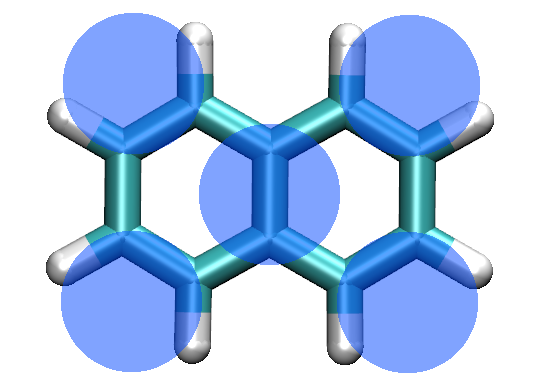
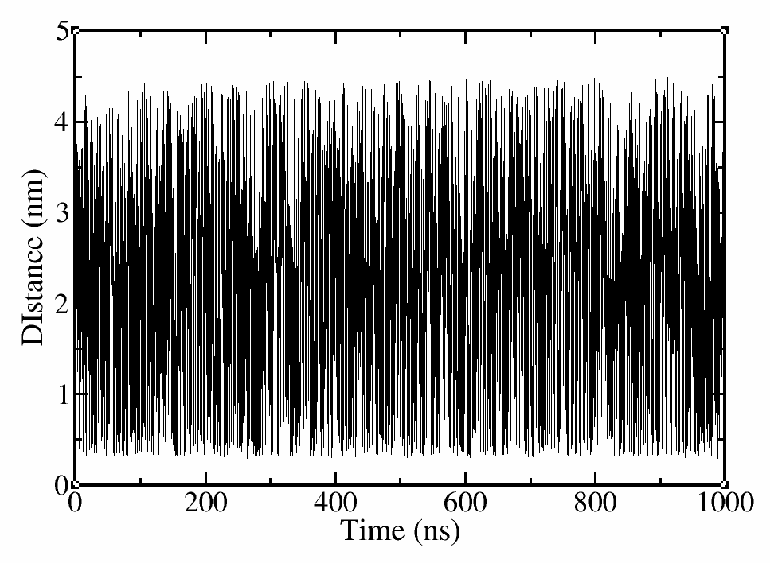
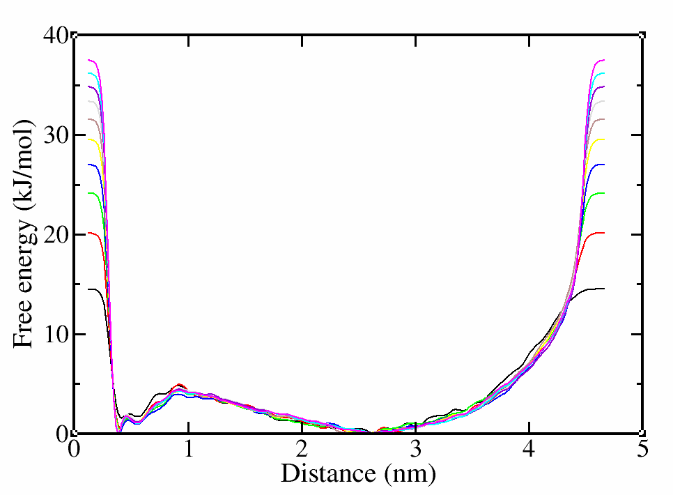
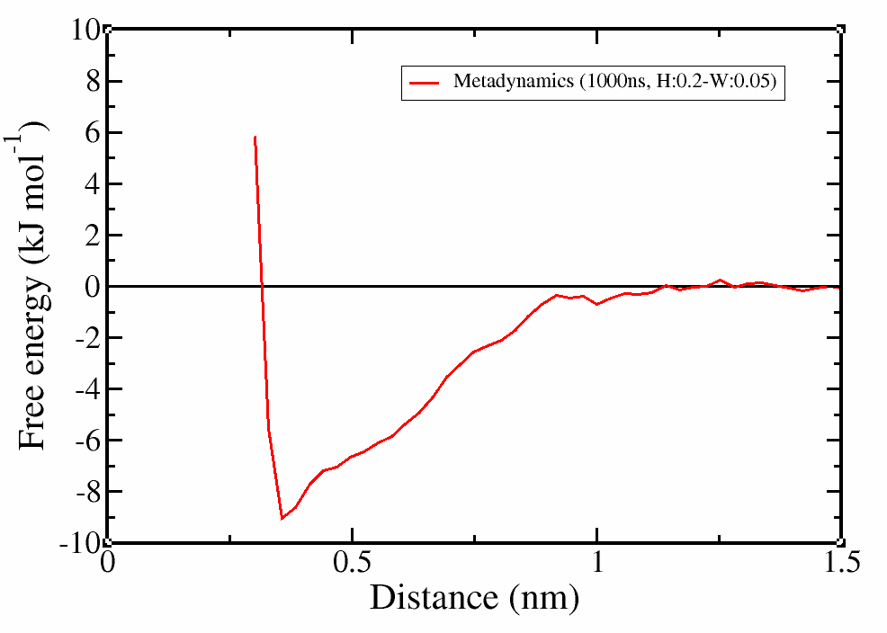
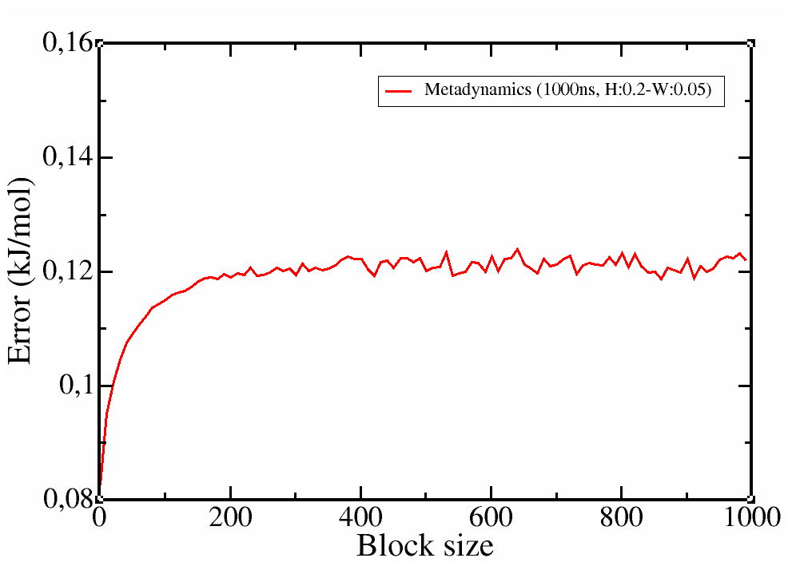
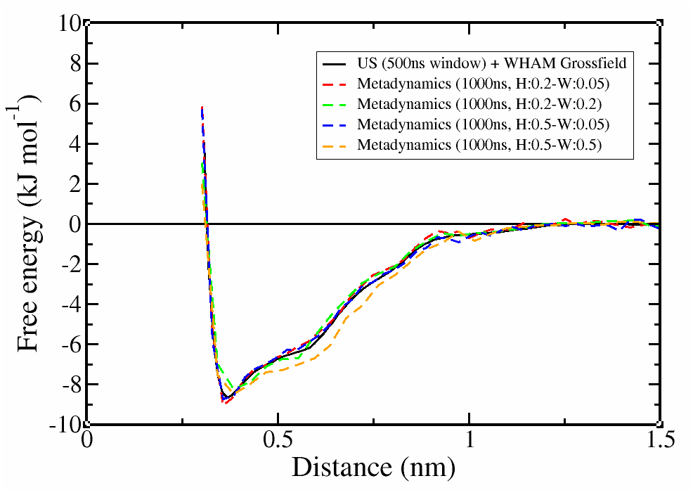
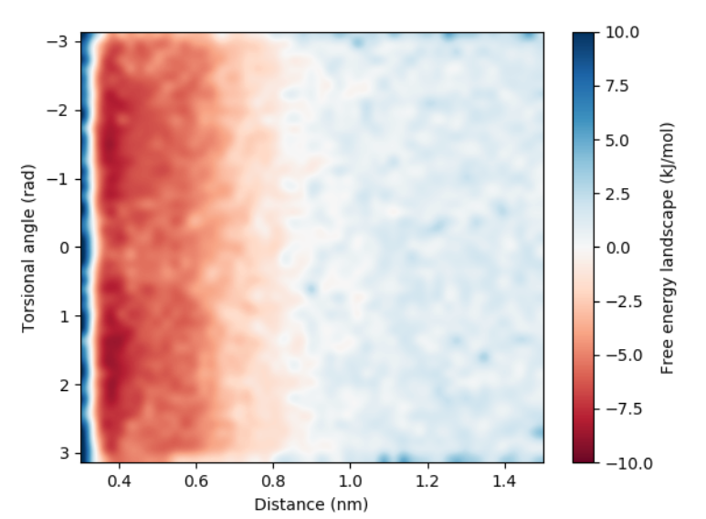

Metadynamics
The material offered in this page is LEGACY material. This means that it either pertains to older iterations of the Martini force field and/or that it is no longer actively supported. However, this does not mean that there aren’t cool things to be learned here! Have a look! If you are looking for the current iterations of the Martini force field lectures or hands-on tutorials, click here to go back!
Introduction
In this tutorial, we will measure the dimerization free energy between two naphthalene molecules, Figure 1, in water. The calculations will be performed with MARTINI 3.0.3 force field and the method for obtaining the free energy landscape will be Metadynamics with PLUMED 2.4.1 package. The basic idea is to provide a simple setup for any dimerization study. For more details on the theory and analysis, references and links will be provided.

In general, our goal is to describe a chemical reaction such as dimerization in a simple way and obtain results that are easily interpreted and evaluated. For this reason, we want to use one or more collective variables (CV) that effectively represent this reaction. The simplest and most useful CV is the distance between the monomers. More CVs can be used at the same time, but this will slow down the whole procedure. If there is no special need to add extra CVs, the distance should be enough. In any case, after obtaining the real free energy landscape of the reaction, we can always project the energy profile in more than one variables (e.g distance+angle, distance+dihedral, etc), as long as we have enough sampling.
System and file preparation
First things first, we need to build a system with the molecules we are interested in. You can download all the files you need to create a cubic box with water and two naphthalene molecules here (you will also find all scripts needed for the analysis). To run a simulation with Gromacs, you also need topology files and MD parameters (top, itp and mdp) that you can found in the same directory. The following commands will do the trick.
# download and extract all files to your working directory
> tar -zxvf files.tar.gz
# load a Gromacs executable, where plumed-2.4.1 has been patched, depending on the location of installation this command might be different
> source ~/usr/local/gromacs_plumed-2.4.1/bin/GMXRC
# insert two naphthalene molecules (naph.gro) in a cubic box, box is an empty box with size 5x5x5nm
> gmx_mpi insert-molecules -f box.gro -ci naph.gro -nmol 2 -o naph_2.gro
# add water inside the empty box
> gmx_mpi solvate -cp naph_2.gro -cs wat.gro -o system.groNow, we have the initial coordinates of our system and all the files we need to start a simulation. Almost all. In order to run any simulation/analysis with plumed, we need a plumed.dat file (of course you can use different names), where all variables/arguments have to be defined. A plumed.dat file for Metadynamics should look more or less like this:
# treat each molecule as whole
WHOLEMOLECULES ENTITY0=1-5, ENTITY1=6-10 # rebuild molecules that are split by the periodic boundary conditions, avoid discontinuities changes in the CV value and artifacts in the calculations
# define atoms for distance
dist: DISTANCE ATOMS=5,10 # calculate the distance between the central atom of each molecule
# metadynamics argument
metad: METAD ARG=dist PACE=500 HEIGHT=0.2 SIGMA=0.05 FILE=HILLS BIASFACTOR=10 GRID_MIN=0.1 GRID_MAX=5.0 GRID_BIN=500 TEMP=300 # in HILLS the following variables will be written: time, dist, sigma, height, biasfactor
# monitor distance
PRINT STRIDE=500 ARG=dist,metad.bias FILE=COLVAR # print the calculated distance and bias in COLVAR every 500 steps, COLVAR will contain three columns time, dist and biasA standard metadynamics simulation requires several arguments to be set:
metad: ARG=__FILL__ PACE=__FILL__ HEIGHT=__FILL__ BIASFACTOR=__FILL__ SIGMA=__FILL__ FILE=__FILL__ GRID_MIN=__FILL__ GRID_MAX=__FILL__ GRID_BIN=__FILL__ TEMP=__FILL__
ARG: the CV we want to bias by depositing Gaussians (e.g. distance, angle, dihedral, etc)
PACE: the step to deposit Gaussians, the step should be large enough for the unbiased CVs to relax (100-500 steps are common choices)
HEIGHT: height of the Gaussian (rule of the thump: ~0.1-1.0*kBT KJ/mol, too low->stay trapped for long/too high->lose local minima, 0.02-1.20 for distance and 1.0-2.0 for angles are commonly used values)
BIASFACTOR: how fast the Gaussian height is decreasing (set close to the barriers you want to cross, barriers 20-30 KJ/mol need a bias factor of ~10-15, 10 is reasonable choice for biological systems)
SIGMA: width of the Gaussian (0.5*unbiased range of variable, nm for distance & rad for angle)
FILE: the output file where the Gaussians are deposited along the trajectory
TEMP: the temperature of the system (needed for well-tempered MD to calculate kB)The performance of Metadynamics falls dramatically in long simulations due to the increasing number of Gaussians that need to be stored and processed during a simulation. This problem can be easily solved if the bias is stored in a grid. The following arguments determine the boundaries and bin size of the grid:
GRID_MIN: the minimum value your CV can adopt
GRID_MAX: the maximum value your CV can adopt
GRID_BIN: the bin sizeThese arguments should be enough to run a fast and efficient Metadynamics simulation.
The basic theory about metadynamics and all the arguments can be found here.
The tutorial of alanine dipeptide on which this tutorial can be found here.
The tutorial on block analysis and error estimates can be found here.
Running the simulation
Before starting a Metadynamics simulation, it is always a good idea to run an unbiased simulation. In this way, you will have an idea of the fluctuations of the CV of interest. You might need to try different values of bias width to avoid losing any information or running extremely long trajectories. In this tutorial, we will run one simulation, evaluate the free energy landscape in terms of convergence and reweight the energy profile in more than one CVs. Then, we will compare the performance of this set of parameters with different parameter values and methods.
You can start the simulation with the following command:
# run a minimization step
> gmx_mpi grompp -p system.top -f min.mdp -c system.gro
> gmx_mpi mdrun -v -c confout-md-em.gro
# run a short equilibration step
> gmx_mpi grompp -p system.top -f short.mdp -c confout-md-em.gro
> gmx_mpi mdrun -v -c confout-md-short.gro
# start the production phase
> gmx_mpi grompp -p system.top -f run.mdp -c confout-md-short.gro
> gmx_mpi mdrun -v -c confout-md-prod.gro -plumed plumed.datSeveral files will be generated. We are mainly interested in COLVAR (the file where time, distance and bias are deposited) and HILLS (the file where the free energy surface as a function of the CV is deposited)
Convergence
There are two requirements that need to be met in order to claim that our simulation has converged.
The system should diffuse in the collective variable space. Initially the CV will be trapped in specific values, but as soon as the free energy landscape is filled with the bias potential the CV should diffuse (check COLVAR).
The free energy should not change significantly along the trajectory. Initially the free energy profile will deviate from the free energy landscape, but progressively the deviations should vanish (check HILLS).
Use your favorite plotting tool to open the COLVAR and HILLS files.
# use xmgrace to plot the distance vs time
xmgrace COLVAR
# calculate the free energy per 10000 steps (--stride) and save it fes.*.dat
>plumed sum_hills --hills HILLS --stride 10000 --mintozero
# you can have a look at the help menu for more options
>plumed –help
# use xmgrace to plot the free energy for each step
>xmgrace fes*
In this case, we have obviously simulated more than enough, since the CV has diffused and the free energy landscape hardly changes after the first hundreds of nanoseconds. Even if these two requirements are met, they are just a qualitative control. What we actually need is a quantitative control to prove that our simulation has converged and we have sampled enough. For this reason, we will use block analysis and calculate the associated errors.
Block analysis
Create a subdirectory named analysis and copy the HILLS file to that directory. (It is better to analyze the results and calculate the errors on a different directory to avoid overwriting files). Block analysis will be performed in the same way as in the alanine dipeptide tutorial.
Our main goal is to calculate a free energy landscape for the dimerization reaction, show that the errors of the free energy calculations are independent of the block size and get a reasonable error estimate for the CV we are measuring.
In order to obtain the unbiased free-energy landscape, we are going to weight the sampled conformations by using a reweighting factor. The basic idea is that since we know the bias potential that has been deposited in the system, we can use the biased sampled distribution to obtain the unbiased distribution that we really need.
We need to tell plumed to read the trajectory and the file where the bias potential is stored and produce a file with the values of interest.
# read the trajectory (traj_comp.xtc) and the biased that has been imposed on each frame (HILLS)
>plumed driver --plumed plumed.dat --mf_xtc ../traj_comp.xtcIn this case, the input for plumed will be slightly different.
# read the Gaussians deposited on HILLS file
RESTART
WHOLEMOLECULES ENTITY0=1-5, ENTITY1=6-10
dist: DISTANCE ATOMS=5,10
metad: METAD ARG=dist PACE=100000000 HEIGHT=0.2 SIGMA=0.05 FILE=HILLS BIASFACTOR=5 TEMP=300 GRID_MIN=0.0 GRID_MAX=5.0 GRID_BIN=500 # set the PACE to a large value
PRINT STRIDE=1 ARG=dist,metad.bias FILE=COLVAR # change stride to 1The final step is to calculate unbiased free-energy landscape and perform our error analysis. script.py will find the maximum bias for weighting, produce a file with the weights as a function of distance (dist.weight). It will then call do_block_fes.py which will calculate the free-energy landscapes while performing block-analysis (fes.*.dat) and calculate the average errors associated with each block (errors.block).
# run script.py (found in files directory)
> ./script.pyCheck the errors for each block. If everything went well, the errors should initially increase and then be constant regardless of the block size.
# use xmgrace to plot the free energy landscape when the errors have converged (e.g. block size:901) after accounting for the entropic corrections. (nc-1)*kB*T*log(x), where nc the number of degrees of freedom
> awk '{print $1"\t"$2+2*2.49*log($1)"\t"$3}' fes.901.dat > fes_final.dat
> xmgrace fes_final.dat
# use xmgrace to plot the distance vs time
> xmgrace errors.block

It is clear that the profile was correctly calculated even in the first 250 ns of simulation and the simulation was converged. However, with a longer trajectory we obtained a smoother profile and more confidence on the error estimation.
We tried different methods and parameter values to calculate the free energy for the dimerization of naphthalene with Martini-3.0.3. The results are presented below.

Notice two things:
with Metadynamics, we obtained almost the same profile as Umbrella Sampling but ~6 times faster. The performance could be further improved with a smarter input, e.g. putting a restraint on the accessible distance.
the choice of Gaussian width can affect the detail of the profile. In this case, the minimum around 0.4nm is slightly underestimated when the Gaussian width was increased and the profile starts to deviate for even large width values.
Reweighting on more CVs
Since we have obtained the unbiased free energy landscape, we can know project the results on different CVs. Make a new directory to avoid overwriting files. We will call it analysis_2. We need to tell plumed to read the trajectory and the file where the bias energy is stored and produce a file with the CV that we biased plus one more CV that we are interested in. We can start with the torsional angle defined by the central bead and one of the outer naphthalene beads.
# read the trajectory (traj_comp.xtc) and the biased that has been imposed on each frame (HILLS)
> plumed driver --plumed plumed.dat --mf_xtc ../traj_comp.xtc
# run script.py
> ./script_2.pyPlumed.dat and script_2.py will be slightly modified to take into account the second CV.
#### plumed.dat
RESTART
WHOLEMOLECULES ENTITY0=1-5, ENTITY1=6-10
dist: DISTANCE ATOMS=5,10 # calculate the distance between the central atom of each molecule
dih: TORSION ATOMS=1,5,6,10 # calculate the torsional angle
metad: METAD ARG=dist PACE=100000000 HEIGHT=0.05 SIGMA=0.05 FILE=HILLS BIASFACTOR=10 TEMP=300 GRID_MIN=0.0 GRID_MAX=5.0 GRID_BIN=500
PRINT STRIDE=1 ARG=dist,dih,metad.bias FILE=COLVARWe will get rid of variables or empty lines that may be present in our free energy landscape and may crush our script, translate the profile so that the plateau is around zero and then plot the results.
> grep -v "Infinity" fes.1.dat > fes.1_2.dat
> max=$(awk 'BEGIN{a= 0}{if ($3>a) a=$3} END{print a}' fes.1_2.dat)
> maxe=$(awk 'BEGIN{a= 0}{if ($4>a) a=$4} END{print a}' fes.1_2.dat)
> sed "s/Infinity/$max\t$maxe/" fes.1.dat > fes.1_2.dat
> sed -i "/^$/d" fes.1_2.dat
> mean=$(awk '{ if ($1 >= 1.0) {sum += $3; n++} } END { if (n > 0); print sum / n }' fes.1_2.dat)
> awk '{ if ($1!=0) {print $1"\t"$2"\t"($3-mean)+2*2.49*log($1)"\t"$4}}' mean=$mean fes.1_2.dat > final_fes.datWe will use a python script to create a 2d-heat map of the free energy landscape based on the distance torsion angle.
# run plot_fes.py
> ./plot_fes.py
It is clear that there is no preference in the way the naphthalenes are oriented.